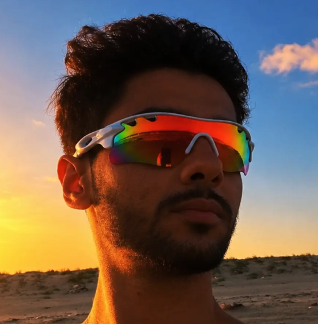

Modelagem 3D
Objetos, cenários e formas com personalidade. Modelagem em Blender para dar dimensão às ideias.
BLENDER ↗DESIGN, DIMENSÃO & EXPERIÊNCIA
Sou Skidrow. Transformo ideias em universos visuais — da primeira forma em 3D à interface que dá vida ao jogo.
Explore meu universo ↗01 / SOBRE MIM

Meu nome é Skidrow. Minha criatividade vive entre o design e os mundos digitais. Trabalho com modelagem em Blender, design gráfico e criação de experiências no Roblox.
Gosto de conectar forma, identidade e interação. Um objeto, uma composição ou uma interface: cada detalhe é uma oportunidade de tornar uma ideia mais interessante.
02 / O QUE EU CRIO
Quatro áreas. Uma visão criativa.
Objetos, cenários e formas com personalidade. Modelagem em Blender para dar dimensão às ideias.
BLENDER ↗Composições visuais que comunicam. Cor, tipografia e identidade trabalhando juntas.
IDENTIDADE VISUAL ↗Ideias para experiências no Roblox. Conceitos de jogo, ambientes e interação pensados para jogadores.
ROBLOX ↗Interfaces para Roblox com hierarquia visual, clareza e um estilo que faz parte do universo do jogo.
ROBLOX UI ↗03 / UNIVERSO VISUAL
Composições ilustrativas feitas para este portfólio. Projetos reais podem ser adicionados aqui.
04 / PRÓXIMA IDEIA
Modelagem, identidade, jogos ou interfaces.
O próximo universo começa com uma ideia.